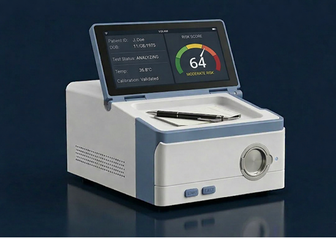
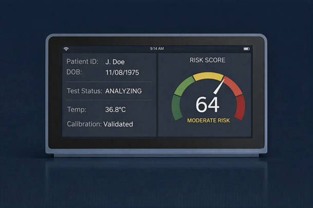

Three components. One integrated solution.
BreathDX is a complete hardware-to-report system, purpose-built for point-of-care cancer screening — not software alone.

Handheld breath sampler
Battery-powered and guided, it accumulates multiple deep-lung breaths into one volume-verified sample, sealed for transport, storage, or on-site analysis.
- Multi-breath capture for sufficient VOC volume
- Disposable, single-use mouthpiece
- Collect off-site — transportable, no cold chain
- Guided collection for weak or elderly patients

BreathDX analyzer
A compact desktop instrument (~15 lbs) built on AATG's proprietary detection technology, reaching the sensitivity needed to resolve cancer-associated VOCs. Screening and confirmation modes.

BreathDX AI platform
Software that turns VOC measurements into a calibrated cancer risk score — weighing patient demographics and clinical risk factors against evidence from hundreds of peer-reviewed studies.
- Lung & breast cancer on the same device
- Clinician-ready probability report
- Evidence-graded biomarker breakdown
- Expandable to new cancers via software
Razor-and-blade economics. A hardware instrument sale to clinics plus recurring per-test consumable revenue (collection tubes, mouthpieces). Test cost is a fraction of mammography ($100–$250) or low-dose CT ($200–$500+), enabling broad adoption and high-volume throughput.